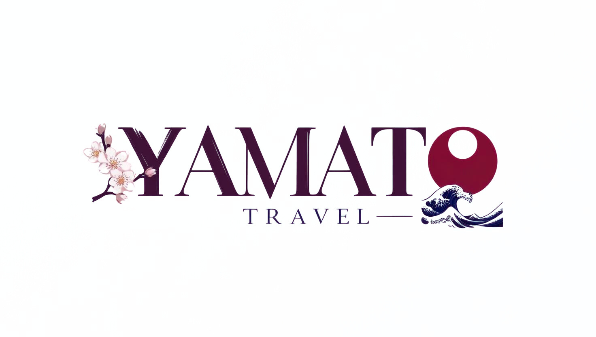

YAMATO TRAVELהיה לנו כיף גדול ללוות אתכם בדרך ליפן ובתוכה. אם השירות עשה לכם טוב, המלצה קטנה שלכם היא הדרך הכי משמעותית לעזור לימאטו טרוול לגדול. זה לוקח דקה, ובשבילנו זה עולם ומלואו.
זו קבוצת פייסבוק גדולה של מטיילים ישראלים שמתכננים טיול ליפן. פוסט קצר על החוויה שלכם איתנו יכול לעזור למטיילים אחרים למצוא אותנו, בדיוק כמו שאתם מצאתם. חשוב רק דבר אחד: כדי שיוכלו להגיע אלינו, ציינו בסוף הפוסט את הקישור לדף שלנו Yamato Travel ואת מספר הוואטסאפ +81-90-7378-1376.
לקבוצה בפייסבוקכך משאירים המלצה, בשלושה צעדים:
תודה מכל הלב. נתראה בטיול הבא ביפן 🇯🇵